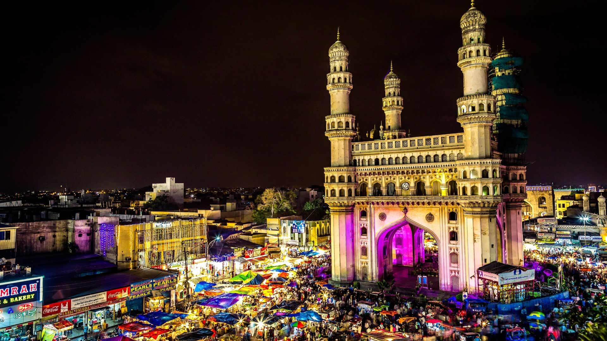
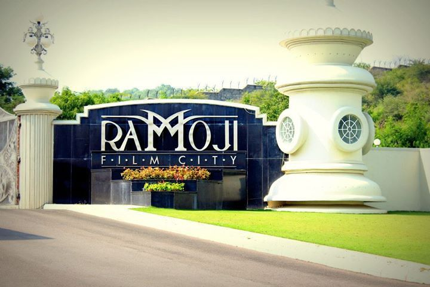
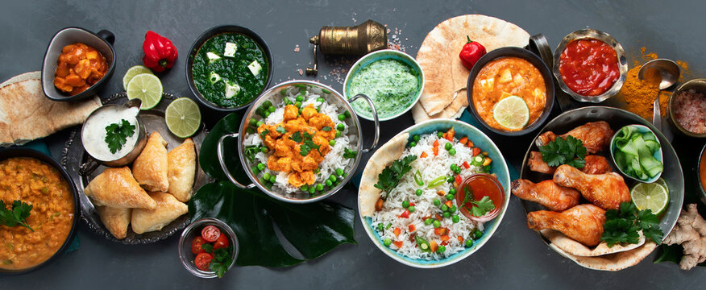

H
yderabad
Hyderabad, the capital city of Telangana state in India, is a vibrant and historic metropolis known for its rich cultural heritage, iconic landmarks, delectable cuisine, and bustling markets. Here are some highlights of Hyderabad tourism
Charminar
This iconic monument is synonymous with Hyderabad. Built in 1591 by Quli Qutb Shah,
the Charminar is a splendid example of Indo-Islamic architecture. Visitors can climb
to the top for panoramic views of the city and explore the bustling markets around it.


Ramoji Film City
It is spreaded across thousands of acres, Ramoji Film City is one of the largest
film studios in the world. Visitors can explore film sets, gardens, theme parks, and
entertainment zones, offering a glimpse into the world of Indian cinema.
Hyderabadi Cuisine
Hyderabad is renowned for its delectable cuisine, especially Hyderabadi biryani,
a flavorful rice dish cooked with aromatic spices and tender meat. Visitors can explore
the city's vibrant food scene, including kebabs, haleem, and sweets like double-ka-meetha.

Book Now